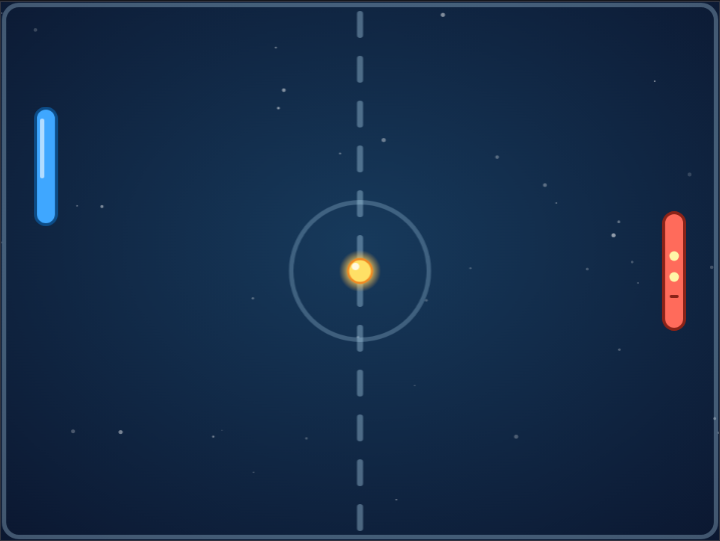
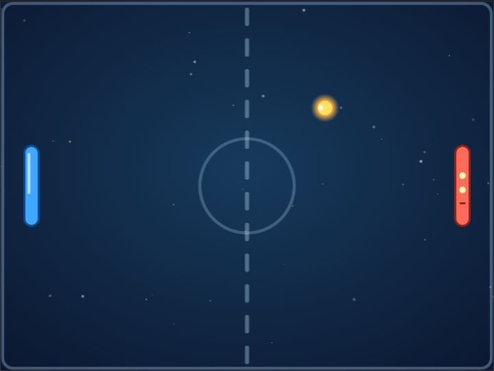
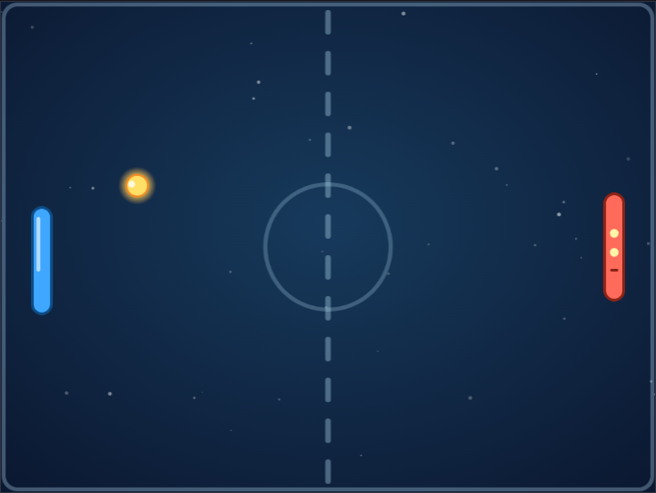
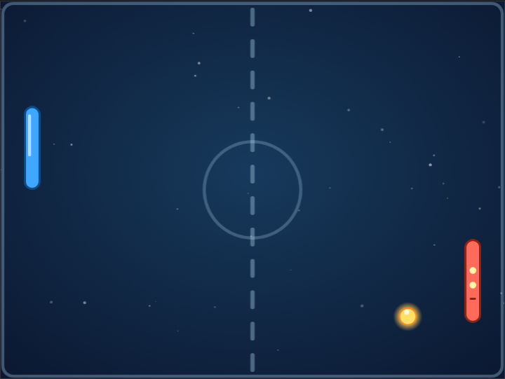
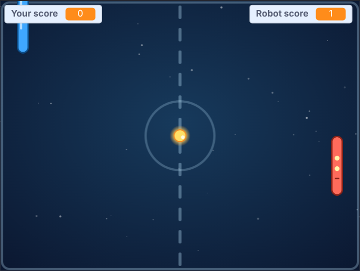

<title>Comet Rally Tutorial</title>
<meta name="claude:viewport-fit-sides" content="cover">
<link rel="preconnect" href="https://fonts.googleapis.com">
<link rel="stylesheet" href="https://fonts.googleapis.com/css2?family=Fredoka:wght@500;600&family=Atkinson+Hyperlegible:ital,wght@0,400;0,700;1,400&family=JetBrains+Mono:wght@400&display=swap">
<style>
/* Layout: one reading column; each step is a numbered section with blocks, a result screenshot and a checkpoint file. */
:root {
  --bg: #f4f3fa; --surface: #ffffff; --fg: #1f1d33; --muted: #5c5a74; --line: #dddbea;
  --accent: #4b3fb5; --accent-soft: #e7e4fb; --drone: #c9621f; --code-bg: #f8f7fd;
  --display: "Fredoka", "Trebuchet MS", system-ui, sans-serif;
  --body: "Atkinson Hyperlegible", "Segoe UI", system-ui, sans-serif;
  --mono: "JetBrains Mono", ui-monospace, Consolas, monospace;
}
@media (prefers-color-scheme: dark) { :root:not([data-theme="light"]) {
  --bg: #13121f; --surface: #1c1a2c; --fg: #ebe9f7; --muted: #a6a3bf; --line: #312e47;
  --accent: #a99cff; --accent-soft: #2a2550; --drone: #f2a065; --code-bg: #232036; color-scheme: dark; } }
:root[data-theme="dark"] {
  --bg: #13121f; --surface: #1c1a2c; --fg: #ebe9f7; --muted: #a6a3bf; --line: #312e47;
  --accent: #a99cff; --accent-soft: #2a2550; --drone: #f2a065; --code-bg: #232036; color-scheme: dark; }

body { background: var(--bg); color: var(--fg); font: 18px/1.6 var(--body);
  padding-left: max(16px, env(safe-area-inset-left, 0px)); padding-right: max(16px, env(safe-area-inset-right, 0px)); padding-block: 40px 72px; }
main { max-width: 760px; margin: 0 auto; display: grid; gap: 48px; }
main > *, .step > *, .stack > *, .intro > * { min-width: 0; }
h1, h2, h3 { font-family: var(--display); font-weight: 600; text-wrap: balance; margin: 0; line-height: 1.15; }
h1 { font-size: clamp(2rem, 6vw, 2.9rem); }
h2 { font-size: 1.7rem; }
h3 { font-size: 1.15rem; font-weight: 500; }
p { margin: 0; max-width: 66ch; }
a { color: var(--accent); }
code { font: 0.88em var(--mono); background: var(--code-bg); padding: 1px 5px; border-radius: 4px; overflow-wrap: anywhere; }
.eyebrow { font: 600 0.78rem var(--body); letter-spacing: 0.08em; text-transform: uppercase; color: var(--drone); }
.stack { display: grid; gap: 16px; min-width: 0; }
.intro { display: grid; gap: 14px; }
.intro p { color: var(--muted); font-size: 1.08rem; }

.plan { list-style: none; margin: 0; padding: 0; display: grid; gap: 6px; counter-reset: plan; }
.plan li { display: flex; flex-wrap: wrap; align-items: baseline; gap: 4px 12px; padding: 8px 12px; border-radius: 6px; counter-increment: plan; }
.plan li::before { content: counter(plan); font: 600 0.95rem var(--display); color: var(--muted); width: 1.4em; }
.plan .name { font-weight: 700; }
.plan a { text-decoration: none; }
.plan a:hover .name, .plan a:focus-visible .name { text-decoration: underline; }
.plan .what { color: var(--muted); flex: 1 1 220px; }

.step { display: grid; gap: 20px; border-top: 2px solid var(--line); padding-top: 32px; }
.step-head { display: flex; align-items: center; gap: 14px; }
.num { flex: none; width: 44px; height: 44px; border-radius: 50%; display: grid; place-items: center;
  background: var(--accent); color: var(--surface); font: 600 1.3rem var(--display); }
ol.do { margin: 0; padding-left: 1.3em; display: grid; gap: 8px; max-width: 66ch; }

.blocks-panel { background: var(--surface); border: 1px solid var(--line); border-radius: 8px; padding: 16px; overflow-x: auto; }
.blocks-panel .label { font: 700 0.78rem var(--body); letter-spacing: 0.06em; text-transform: uppercase; color: var(--muted); margin-bottom: 8px; }
pre.blocks { margin: 0; font: 13px var(--mono); white-space: pre; }

.note { border-left: 3px solid var(--drone); padding: 2px 0 2px 14px; color: var(--fg); }
.note b { color: var(--drone); }
figure { margin: 0; display: grid; gap: 8px; }
figure img { width: 100%; border-radius: 8px; border: 1px solid var(--line); display: block; }
figcaption { font-size: 0.9rem; color: var(--muted); }

.table-wrap { overflow-x: auto; }
table { border-collapse: collapse; font-variant-numeric: tabular-nums; min-width: 420px; }
th, td { text-align: right; padding: 6px 14px; border-bottom: 1px solid var(--line); }
th:first-child, td:first-child { text-align: left; }
th { font-size: 0.82rem; color: var(--muted); font-weight: 700; }

.checkpoint { display: flex; flex-wrap: wrap; align-items: center; gap: 10px 16px; background: var(--surface);
  border: 1px solid var(--line); border-radius: 8px; padding: 12px 16px; }
.checkpoint p { flex: 1 1 260px; color: var(--muted); font-size: 0.95rem; }
.btn { display: inline-block; font-weight: 700; text-decoration: none; color: var(--surface); background: var(--accent);
  padding: 8px 16px; border-radius: 6px; white-space: nowrap; }
.btn:hover, .btn:focus-visible { outline: 3px solid var(--accent-soft); outline-offset: 1px; }
.try { margin: 0; padding-left: 1.3em; display: grid; gap: 6px; }
svg.coords text { font: 11px var(--body); fill: var(--muted); }
.scripts { display: flex; flex-wrap: wrap; gap: 12px; align-items: flex-start; }
.scripts .blocks-panel { flex: 0 1 auto; max-width: 100%; min-width: 0; }
.tag { font-size: 0.7rem; font-weight: 700; letter-spacing: 0.04em; padding: 1px 7px; border-radius: 999px; margin-left: 6px; }
.tag.new { background: var(--accent); color: var(--surface); }
.tag.changed { border: 1px solid var(--drone); color: var(--drone); }
.flow { list-style: none; margin: 0; padding: 0; display: flex; flex-wrap: wrap; gap: 8px; counter-reset: none; }
.flow li { display: grid; gap: 2px; padding: 10px 14px; border-radius: 8px; background: var(--surface); border: 1px solid var(--line);
  flex: 1 1 130px; min-width: 0; position: relative; }
.flow li b { font: 600 1.05rem var(--display); color: var(--accent); }
.flow li span { font-size: 0.85rem; color: var(--muted); }
footer { color: var(--muted); font-size: 0.92rem; border-top: 2px solid var(--line); padding-top: 24px; }
</style>

<main>
  <header class="intro">
    <span class="eyebrow">Scratch tutorial for kids · 6 steps · about 1 hour</span>
    <h1>Build Comet Rally</h1>
    <p>In Comet Rally you play against a robot. You both have a paddle. Hit the glowing ball back, and try to get it past the robot. The first one to 5 points wins!</p>
    <p>You need the Scratch editor: <a href="https://scratch.mit.edu/projects/editor/">scratch.mit.edu/projects/editor</a>. Every step has a file you can download if you get stuck.</p>
  </header>

  <section class="stack" aria-label="Steps">
    <h3>The steps</h3>
    <ol class="plan">
      <li><a href="#step-1"><span class="name">Your paddle</span></a><span class="what">It follows your mouse</span></li>
      <li><a href="#step-2"><span class="name">The ball moves</span></a><span class="what">It flies and bounces off the walls</span></li>
      <li><a href="#step-3"><span class="name">Hit it!</span></a><span class="what">The ball bounces off your paddle, and you can aim</span></li>
      <li><a href="#step-4"><span class="name">The robot</span></a><span class="what">A robot paddle that plays against you</span></li>
      <li><a href="#step-5"><span class="name">Points</span></a><span class="what">Miss the ball and the other side scores</span></li>
      <li><a href="#step-6"><span class="name">Make it awesome</span></a><span class="what">Faster ball, new colours, and a winner</span></li>
    </ol>
  </section>

  <!-- ============================================================ STEP 1 -->
  <section class="step" id="step-1">
    <div class="step-head"><span class="num">1</span><h2>Your paddle</h2></div>
    <p>First, get the pictures. Download the starter project, then open it in Scratch with <b>File › Load from your computer</b>.</p>
    <div class="checkpoint">
      <p>The starter project has the court, the two paddles and the ball. No code yet.</p>
      <a class="btn" href="https://github.com/AJosephsen/MyTemporaryJunk/raw/main/scratch/tutorials/comet-rally/starter.sb3">Download starter.sb3</a>
    </div>
    <p>Your paddle is the blue one, called <b>Player</b>. Click it, and build this script:</p>
    <div class="scripts">
<div class="blocks-panel"><div class="label">Player <span class="tag new">new</span></div>
<pre class="blocks">when flag clicked
go to x: (-210) y: (0)
forever
  set y to (mouse y)
end</pre></div>
</div>
    <ul class="do">
      <li><b>go to x: -210 y: 0</b> puts the paddle on the left side.</li>
      <li><b>forever</b> repeats the blocks inside it, again and again, until you stop the game.</li>
      <li><b>set y to (mouse y)</b> moves the paddle up and down to where your mouse is. <b>y</b> means up and down.</li>
    </ul>
    <h3>Try it</h3>
    <p>Click the green flag and move your mouse up and down over the Stage. The paddle follows!</p>
    <figure>
      
      <figcaption>Your paddle follows the mouse.</figcaption>
    </figure>
    <div class="checkpoint">
      <p>Stuck? This is the project at the end of step 1.</p>
      <a class="btn" href="https://github.com/AJosephsen/MyTemporaryJunk/raw/main/scratch/tutorials/comet-rally/step1.sb3">Download step1.sb3</a>
    </div>
  </section>

  <!-- ============================================================ STEP 2 -->
  <section class="step" id="step-2">
    <div class="step-head"><span class="num">2</span><h2>The ball moves</h2></div>
    <p>Now the ball gets a script. In Scratch, every sprite points in a <b>direction</b>, measured in degrees:</p>
    <svg class="coords" viewBox="0 0 400 220" width="100%" style="max-width:400px" role="img" aria-label="Scratch directions: 0 is up, 90 is right, 180 is down, -90 is left. The ball starts at 45, up and to the right."><circle cx="150" cy="110" r="70" fill="none" stroke="var(--line)" stroke-width="2"/><line x1="150.0" y1="110.0" x2="150.0" y2="58.0" stroke="var(--muted)" stroke-width="3" stroke-linecap="round"/><polygon points="150.0,48.0 156.0,58.0 144.0,58.0" fill="var(--muted)"/><text x="150" y="26" text-anchor="middle">0 = up</text><line x1="150.0" y1="110.0" x2="202.0" y2="110.0" stroke="var(--muted)" stroke-width="3" stroke-linecap="round"/><polygon points="212.0,110.0 202.0,116.0 202.0,104.0" fill="var(--muted)"/><text x="234" y="114" text-anchor="start">90 = right</text><line x1="150.0" y1="110.0" x2="150.0" y2="162.0" stroke="var(--muted)" stroke-width="3" stroke-linecap="round"/><polygon points="150.0,172.0 144.0,162.0 156.0,162.0" fill="var(--muted)"/><text x="150" y="206" text-anchor="middle">180 = down</text><line x1="150.0" y1="110.0" x2="98.0" y2="110.0" stroke="var(--muted)" stroke-width="3" stroke-linecap="round"/><polygon points="88.0,110.0 98.0,104.0 98.0,116.0" fill="var(--muted)"/><text x="66" y="114" text-anchor="end">-90 = left</text><line x1="150.0" y1="110.0" x2="192.4" y2="67.6" stroke="var(--drone)" stroke-width="4" stroke-linecap="round"/><polygon points="199.5,60.5 196.7,71.8 188.2,63.3" fill="var(--drone)"/><text x="206" y="52" style="fill:var(--drone)">45: where the ball starts</text></svg>
    <p>The ball starts by pointing at <b>45</b>: halfway between up and right. Click the <b>Ball</b> and build this:</p>
    <div class="scripts">
<div class="blocks-panel"><div class="label">Ball <span class="tag new">new</span></div>
<pre class="blocks">when flag clicked
go to x: (0) y: (0)
point in direction (45)
forever
  move (6) steps
  if on edge, bounce
end</pre></div>
</div>
    <ul class="do">
      <li><b>move 6 steps</b> moves the ball forward a little, in the direction it points.</li>
      <li><b>if on edge, bounce</b> turns the ball around when it hits a wall, just like a real ball.</li>
      <li>Both are inside <b>forever</b>, so the ball keeps on flying.</li>
    </ul>
    <h3>Try it</h3>
    <p>Click the green flag. The ball zooms around and bounces off the walls. It flies right through your paddle, though. We fix that next.</p>
    <figure>
      
      <figcaption>The ball flies and bounces.</figcaption>
    </figure>
    <h3>Try this</h3>
    <ul class="try">
      <li>Change <b>6</b> to <b>12</b>. Whoa, fast! Then change it back.</li>
    </ul>
    <div class="checkpoint">
      <p>Stuck? This is the project at the end of step 2.</p>
      <a class="btn" href="https://github.com/AJosephsen/MyTemporaryJunk/raw/main/scratch/tutorials/comet-rally/step2.sb3">Download step2.sb3</a>
    </div>
  </section>

  <!-- ============================================================ STEP 3 -->
  <section class="step" id="step-3">
    <div class="step-head"><span class="num">3</span><h2>Hit it!</h2></div>
    <p>This is the cleverest part of the game. When the ball hits your paddle, it should bounce back. And <b>where</b> it hits your paddle decides <b>where it goes</b>:</p>
    <svg class="coords" viewBox="0 0 400 240" width="100%" style="max-width:440px" role="img" aria-label="Aim: the ball hitting near the top of the paddle flies up at 66, the middle straight at 90, near the bottom down at 114."><rect x="70" y="30" width="18" height="180" rx="9" fill="#3fa7ff" stroke="#0d4c86" stroke-width="2"/><line x1="58" y1="120" x2="98" y2="120" stroke="var(--muted)" stroke-width="1.5" stroke-dasharray="4 3"/><text x="54" y="124" text-anchor="end">middle</text><circle cx="104" cy="65" r="8" fill="#ffe066" stroke="#f08a24" stroke-width="1.5"/><line x1="114.0" y1="65.0" x2="187.1" y2="32.5" stroke="var(--drone)" stroke-width="3" stroke-linecap="round"/><polygon points="196.2,28.4 189.5,37.9 184.6,27.0" fill="var(--drone)"/><text x="210" y="26">near the top: 66</text><text x="210" y="41">flies up</text><circle cx="104" cy="120" r="8" fill="#ffe066" stroke="#f08a24" stroke-width="1.5"/><line x1="114.0" y1="120.0" x2="194.0" y2="120.0" stroke="var(--drone)" stroke-width="3" stroke-linecap="round"/><polygon points="204.0,120.0 194.0,126.0 194.0,114.0" fill="var(--drone)"/><text x="218" y="120">the middle: 90</text><text x="218" y="135">straight across</text><circle cx="104" cy="175" r="8" fill="#ffe066" stroke="#f08a24" stroke-width="1.5"/><line x1="114.0" y1="175.0" x2="187.1" y2="207.5" stroke="var(--drone)" stroke-width="3" stroke-linecap="round"/><polygon points="196.2,211.6 184.6,213.0 189.5,202.1" fill="var(--drone)"/><text x="210" y="214">near the bottom: 114</text><text x="210" y="229">flies down</text></svg>
    <p>The middle of your paddle sends the ball straight across. The top sends it up. The bottom sends it down. That is how you aim!</p>

    <h3>The aim block</h3>
    <p>The ball works out how far it is from the middle of your paddle: its own <b>y position</b>, minus the paddle’s <b>y position</b>. Then it turns that far away from straight (90), times 1.2:</p>
    <div class="table-wrap">
      <table>
        <thead><tr><th>Where the ball hits</th><th>Distance from the middle</th><th>New direction</th><th>The ball goes</th></tr></thead>
        <tbody>
          <tr><td>The middle</td><td>0</td><td>90 − 0 = 90</td><td>Straight across</td></tr>
          <tr><td>Near the top</td><td>20</td><td>90 − 24 = 66</td><td>Up and right</td></tr>
          <tr><td>Near the bottom</td><td>−20</td><td>90 + 24 = 114</td><td>Down and right</td></tr>
        </tbody>
      </table>
    </div>
    <p>Add this <b>if</b> block to the Ball’s script, right after <b>move 6 steps</b>. You find <b>([y position] of (Player))</b> in Sensing: pick <b>Player</b> in the second menu and <b>y position</b> in the first.</p>
    <div class="scripts">
<div class="blocks-panel"><div class="label">Ball <span class="tag changed">changed</span></div>
<pre class="blocks">when flag clicked
go to x: (0) y: (0)
point in direction (45)
forever
  move (6) steps
  if &lt;&lt;touching (Player v)?&gt; and &lt;(direction) &lt; (0)&gt;&gt; then
    point in direction ((90) - (((y position) - ([y position v] of (Player v))) * (1.2)))
  end
  if on edge, bounce
end</pre></div>
</div>
    <ul class="do">
      <li><b>touching Player?</b> is true when the ball touches your paddle.</li>
      <li><b>direction &lt; 0</b> means “flying to the left”, towards your paddle. Without it, the ball could get stuck on the paddle and bounce again and again.</li>
    </ul>
    <h3>Try it</h3>
    <p>Hit the ball with the middle of your paddle, then with the top, then with the bottom. See how it flies off differently?</p>
    <figure>
      
      <figcaption>Hit with the top of the paddle: the ball flies up and away.</figcaption>
    </figure>
    <h3>Try this</h3>
    <ul class="try">
      <li>Change <b>1.2</b> to <b>2</b>. Now the aim is much stronger. Is that too wild?</li>
    </ul>
    <div class="checkpoint">
      <p>Stuck? This is the project at the end of step 3.</p>
      <a class="btn" href="https://github.com/AJosephsen/MyTemporaryJunk/raw/main/scratch/tutorials/comet-rally/step3.sb3">Download step3.sb3</a>
    </div>
  </section>

  <!-- ============================================================ STEP 4 -->
  <section class="step" id="step-4">
    <div class="step-head"><span class="num">4</span><h2>The robot</h2></div>
    <p>Time for an opponent! The red paddle on the right is the <b>Robot</b>. It watches the ball and moves towards it, but only a little bit each time, so it is a bit slow. That way you can beat it.</p>
    <p>The Robot gets a script, and the Ball gets a second <b>if</b> block, just like the one for your paddle, but mirrored:</p>
    <div class="scripts">
<div class="blocks-panel"><div class="label">Robot <span class="tag new">new</span></div>
<pre class="blocks">when flag clicked
go to x: (210) y: (0)
forever
  change y by ((([y position v] of (Ball v)) - (y position)) / (10))
end</pre></div>
<div class="blocks-panel"><div class="label">Ball <span class="tag changed">changed</span></div>
<pre class="blocks">when flag clicked
go to x: (0) y: (0)
point in direction (45)
forever
  move (6) steps
  if &lt;&lt;touching (Player v)?&gt; and &lt;(direction) &lt; (0)&gt;&gt; then
    point in direction ((90) - (((y position) - ([y position v] of (Player v))) * (1.2)))
  end
  if &lt;&lt;touching (Robot v)?&gt; and &lt;(direction) &gt; (0)&gt;&gt; then
    point in direction ((-90) + (((y position) - ([y position v] of (Robot v))) * (1.2)))
  end
  if on edge, bounce
end</pre></div>
</div>
    <ul class="do">
      <li><b>The Robot</b> finds how far it is from the ball, and moves one tenth of the way each time. When the ball is far away it moves fast; when it is close, it slows down.</li>
      <li><b>The Ball</b> bounces off the Robot with the same aim trick. The robot sends the ball to the left, so it starts from <b>−90</b> (left) instead of 90.</li>
      <li><b>direction &gt; 0</b> means “flying to the right”, towards the robot.</li>
    </ul>
    <h3>Try it</h3>
    <p>Play a rally with the robot. Can you make it miss by aiming steeply?</p>
    <figure>
      
      <figcaption>The robot follows the ball.</figcaption>
    </figure>
    <h3>Try this</h3>
    <ul class="try">
      <li>Change <b>10</b> to <b>4</b> in the Robot’s script. The robot gets much quicker. Change it to <b>20</b> for a sleepy robot.</li>
    </ul>
    <div class="checkpoint">
      <p>Stuck? This is the project at the end of step 4.</p>
      <a class="btn" href="https://github.com/AJosephsen/MyTemporaryJunk/raw/main/scratch/tutorials/comet-rally/step4.sb3">Download step4.sb3</a>
    </div>
  </section>

  <!-- ============================================================ STEP 5 -->
  <section class="step" id="step-5">
    <div class="step-head"><span class="num">5</span><h2>Points</h2></div>
    <p>When the ball gets past a paddle, the other side scores a point. Then the ball goes back to the middle and is served again.</p>
    <ol class="do">
      <li>In <b>Variables</b>, click <b>Make a Variable</b> and make <code>Your score</code>. Then make another one called <code>Robot score</code>.</li>
      <li>Add the new blocks to the Ball’s script. The two new <b>if</b> blocks go just before <b>if on edge, bounce</b>.</li>
    </ol>
    <div class="scripts">
<div class="blocks-panel"><div class="label">Ball <span class="tag changed">changed</span></div>
<pre class="blocks">when flag clicked
set [Your score v] to (0)
set [Robot score v] to (0)
go to x: (0) y: (0)
point in direction (45)
forever
  move (6) steps
  if &lt;&lt;touching (Player v)?&gt; and &lt;(direction) &lt; (0)&gt;&gt; then
    point in direction ((90) - (((y position) - ([y position v] of (Player v))) * (1.2)))
  end
  if &lt;&lt;touching (Robot v)?&gt; and &lt;(direction) &gt; (0)&gt;&gt; then
    point in direction ((-90) + (((y position) - ([y position v] of (Robot v))) * (1.2)))
  end
  if &lt;(x position) &lt; (-220)&gt; then
    change [Robot score v] by (1)
    go to x: (0) y: (0)
    point in direction (pick random (-120) to (-60))
    wait (1) seconds
  end
  if &lt;(x position) &gt; (220)&gt; then
    change [Your score v] by (1)
    go to x: (0) y: (0)
    point in direction (pick random (60) to (120))
    wait (1) seconds
  end
  if on edge, bounce
end</pre></div>
</div>
    <ul class="do">
      <li><b>x position &lt; -220</b> means the ball got past your paddle on the left. The robot gets a point.</li>
      <li><b>x position &gt; 220</b> means it got past the robot on the right. You get a point!</li>
      <li><b>pick random</b> serves the ball in a slightly different direction each time, so no two serves are the same. It is served towards whoever just lost the point.</li>
      <li><b>wait 1 seconds</b> gives everyone a moment to get ready.</li>
    </ul>
    <figure>
      
      <figcaption>The robot scored, and the ball is served again.</figcaption>
    </figure>
    <div class="checkpoint">
      <p>Stuck? This is the project at the end of step 5.</p>
      <a class="btn" href="https://github.com/AJosephsen/MyTemporaryJunk/raw/main/scratch/tutorials/comet-rally/step5.sb3">Download step5.sb3</a>
    </div>
  </section>

  <!-- ============================================================ STEP 6 -->
  <section class="step" id="step-6">
    <div class="step-head"><span class="num">6</span><h2>Make it awesome</h2></div>
    <p>The last step adds three fun things:</p>
    <ul class="do">
      <li><b>Speed:</b> every time someone hits the ball, it gets a bit faster. Make a variable called <code>speed</code>, and use it in <b>move (speed) steps</b>.</li>
      <li><b>Colours:</b> every hit changes the ball’s colour with the <b>color effect</b>.</li>
      <li><b>A winner:</b> the first to 5 points wins, and the ball says who won.</li>
    </ul>
    <p>Your paddle also gets two <b>if</b> blocks, so it can’t slide off the top or bottom of the court.</p>
    <div class="scripts">
<div class="blocks-panel"><div class="label">Player <span class="tag changed">changed</span></div>
<pre class="blocks">when flag clicked
go to x: (-210) y: (0)
forever
  set y to (mouse y)
  if &lt;(y position) &gt; (140)&gt; then
    set y to (140)
  end
  if &lt;(y position) &lt; (-140)&gt; then
    set y to (-140)
  end
end</pre></div>
<div class="blocks-panel"><div class="label">Ball <span class="tag changed">changed</span></div>
<pre class="blocks">when flag clicked
set [Your score v] to (0)
set [Robot score v] to (0)
set [speed v] to (6)
go to x: (0) y: (0)
point in direction (45)
forever
  move (speed) steps
  if &lt;&lt;touching (Player v)?&gt; and &lt;(direction) &lt; (0)&gt;&gt; then
    point in direction ((90) - (((y position) - ([y position v] of (Player v))) * (1.2)))
    change [speed v] by (0.5)
    change [color v] effect by (25)
  end
  if &lt;&lt;touching (Robot v)?&gt; and &lt;(direction) &gt; (0)&gt;&gt; then
    point in direction ((-90) + (((y position) - ([y position v] of (Robot v))) * (1.2)))
    change [speed v] by (0.5)
    change [color v] effect by (25)
  end
  if &lt;(x position) &lt; (-220)&gt; then
    change [Robot score v] by (1)
    if &lt;(Robot score) = (5)&gt; then
      say [The robot wins!]
      stop [this script v]
    end
    go to x: (0) y: (0)
    point in direction (pick random (-120) to (-60))
    set [speed v] to (6)
    wait (1) seconds
  end
  if &lt;(x position) &gt; (220)&gt; then
    change [Your score v] by (1)
    if &lt;(Your score) = (5)&gt; then
      say [You win!]
      stop [this script v]
    end
    go to x: (0) y: (0)
    point in direction (pick random (60) to (120))
    set [speed v] to (6)
    wait (1) seconds
  end
  if on edge, bounce
end</pre></div>
</div>
    <h3>Try it</h3>
    <p>Play a whole game! Hit the ball with the ends of your paddle to make the robot run. It gets harder as the ball speeds up.</p>
    <figure>
      
      <figcaption>You win 5 : 0!</figcaption>
    </figure>
    <h3>Try this</h3>
    <ul class="try">
      <li>Play to 10 points instead of 5.</li>
      <li>Add a sound in both <b>if touching</b> blocks, so every hit goes “pop”.</li>
      <li>Draw your own paddle in the Costumes tab.</li>
    </ul>
    <div class="checkpoint">
      <p>The finished game.</p>
      <a class="btn" href="https://github.com/AJosephsen/MyTemporaryJunk/raw/main/scratch/tutorials/comet-rally/step6.sb3">Download step6.sb3</a>
    </div>
  </section>

  <footer>
    <p>Great job! You built a whole game with three short scripts. The trickiest part, the aim, is just one block: <b>90 − (distance from the middle × 1.2)</b>.</p>
  </footer>
</main>

<script src="https://cdn.jsdelivr.net/npm/scratchblocks@3.6.4/build/scratchblocks.min.js"></script>
<script>
  scratchblocks.renderMatching("pre.blocks", { style: "scratch3", languages: ["en"], scale: 0.75 });
</script>
